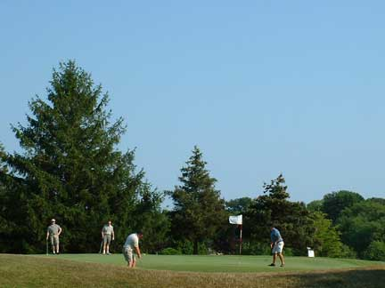

How to Make Friends on the Golf Course

Playing golf alone can some time be boring. If you're alone most of the time it's easy to join another group of golfers.
Steps
- When you first meet the person be sure to shake hands and be polite when you are introducing your self.
- If you're young like me, in your mid-teens, most people don't expect much good golf out of you. Some of the older players think you're just there to mess around and know nothing about the game. So you need to start out with a good shot and show your able to play.
- You know you have their respect if you have better first shot or first hole than the others in the group.
- For the first hole or two just listen and be pretty quiet, that way you can learn a little about your new group. If you do this, for the rest of the round you'll know what to talk about and how much to talk.
- While other players are getting ready to hit their next shot be quiet and still.
- One of the most important things to remember is to stay up with the group, DO NOT slow the group down. If everyone is always waiting for you, you're just like dead weight and they start giving you dirt looks. This make the round of golf harder for them and miserable for yourself.
- Be sure to talk, ask questions, and make conversations so you don't seem boring, but not so much that you become annoying.
- When players hit good shots tell them things like "nice shot" or "that'll play." When players mishit a shot be quiet and no smart comments. If they're golfer that are not and do a lot a joking around it is OK to joke around and throw in a smart comment or two.
- It is always a good thing to be honest about your score because a lot of time the other player will count your strokes and you will lose their respect.
- When you finish the round shake hands and say you enjoyed the playing with them.
Tips
- It is best to join players that are about the same handicap, skill level, as you. If you are like me and have a handicap in the single digits you don't want to play with someone who shoots well over a hundred.
- The more friends you make and the more people you know at your local course the more likely you are to have someone to play with every time you play.